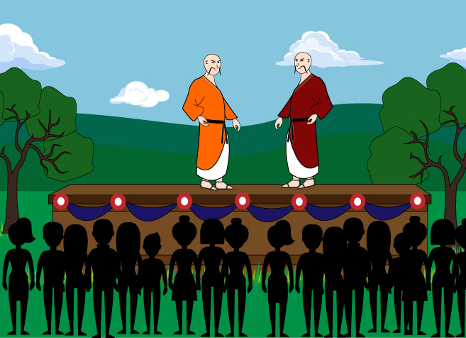
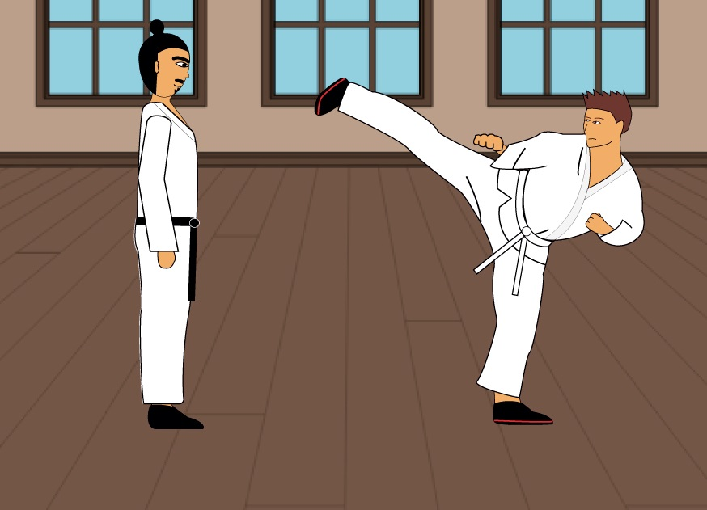
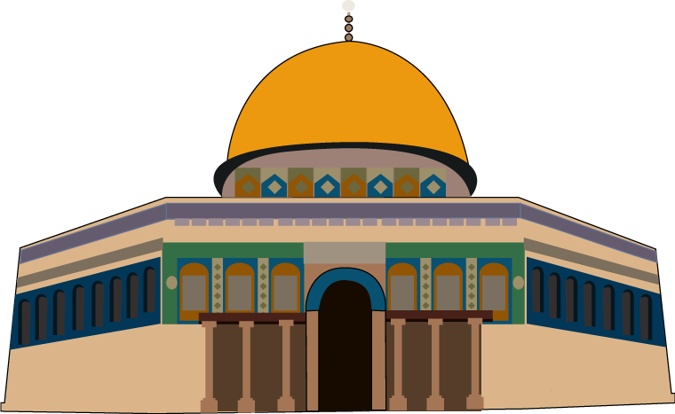
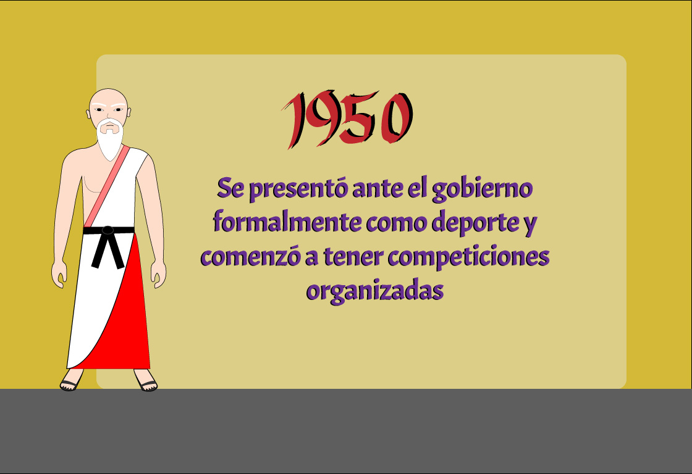
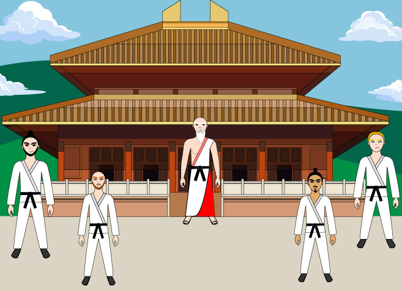
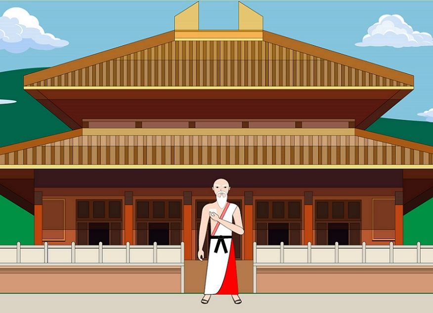
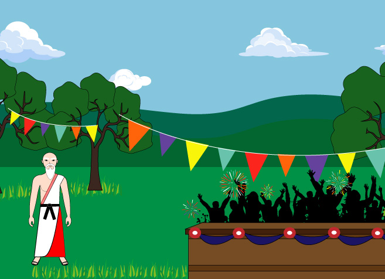
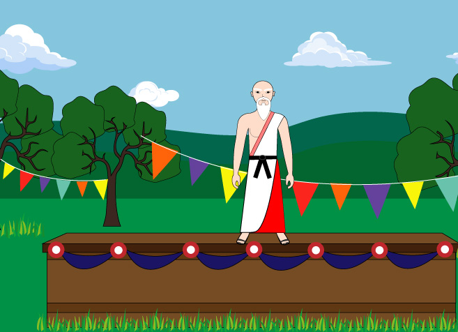

Para comenzar ésta grandiosa aventura por el tiempo recuerda avanzar con la flecha en dirección hacia la derecha y para retroceder con la flecha en dirección izquierda
Un monje a una aldea de China y les enseña a los que estaban allí un sistema oficial de lucha y defensa para que tuvieran algunas técnicas para defenderse en el momento en que lo necesiten.
El monje se va. Tiempo después 2 jóvenes de la aldea deciden viajar porque se encuentran en guerra con otra comunidad, y deciden que en el camino van a transmitir el conocimiento que tiempo les dieron los monjes chinos.
Los jóvenes en su camino se encuentran al comandante de las fuerzas de defensa y seguridad de Israel, y le enseñan el sistema oficial de lucha y defensa.
Se hace de noche y el comandante les da las gracias a los jóvenes y se va para su cuartel y los jóvenes siguen su camino.
El comandante llega al cuartel y les enseña a sus soldados el sistema.
Los soldados practican lo enseñado y se dan de cuenta que este sistema les servirá demasiado en sus misiones.
Jovenes practican el Wushu en China, siguiendo los movimientos de su gran maestro.
Dos maestros hacen una presentación del Wushu formalmente como un deporte ante el gobierno.

Dos jovenes participan en una competición organizada en tokio.


Año 1950
Historieta

Jovenes practican el Wushu en China, siguiendo los movimientos de su gran maestro San Mura.

San Mura lee una carta que le llega y se alegra por lo que dice en ella.

San Mura llega al festival y se pone alegre al ver el espectáculo tan grandioso que hay.

San Mura se monta en una tarima y empieza a realizar su debut del Wushu ante la multitud y el gobierno como un deporte más.

Un representante del gobierno acepta al Wushu como un deporte más anotandolo en los datos de los deportes.
Dos jóvenes participan en una competición organizada en Tokio días después del festival.